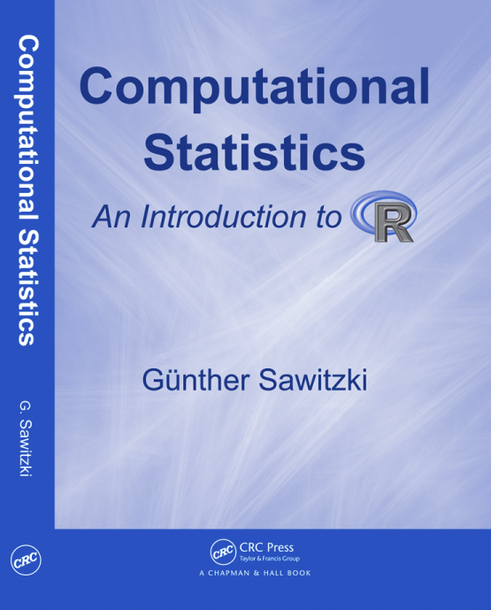

G. Sawitzki
Computational Statistics: An Introduction to R
Contents
Introduction
Chapter 1: Basic Data Analysis
R
Programming Conventions
Generation of Random Numbers and Patterns
Random Numbers
Patterns
Case Study: Distribution Diagnostics
Distribution Functions
Histogram and Related Plots; Barcharts
Statistics of Distribution Functions; Kolmogorov-Smirnov Tests; Monte Carlo Confidence Bands
Statistics of Histograms and Related Plots; χ²-Tests
Moments and Quantiles
R
Complements
Random Numbers
Graphical Comparisons
Functions
Enhancing Graphical Displays
R
Internals: Parse, Eval, Print, Executing Files
Packages
Statistical Summary
Chapter 2: Regression
General Regression Model
Linear Model
Factors
Least Squares Estimation
More Examples for Linear Models
Model Formulae
Gauss-Markov Estimator
Variance Decomposition and Analysis of Variance
Simultaneous Inference
Scheffé's Confidence Bands
Tukey's Confidence Intervals; Case Study: Titre Plates
Beyond Linear Regression
Transformations
Generalised Linear Models
Local Regression
R
Complements
Discretisation
External Data
Testing Software
R
Data Types
Classes and Polymorphic Functions
Extractor Functions
Statistical Summary
Chapter 3: Comparisons
Shift/Scale Families, and Stochastic Order
QQ
plot,
PP
plot, and Comparison of Distributions
Kolmogorov-Smirnov Tests
Tests for Shift Alternatives
A Road Map
Power and Confidence
Theoretical Power and Confidence
Simulated Power and Confidence
Quantile Estimation by Simulation
Qualitative Features of Distributions
Statistical Summary
Chapter 4: Dimensions 1, 2, 3, …, ∞
R
Complements
Dimensions
Selections
Projections
Marginal Distributions and Scatter Plot Matrices
Projection Pursuit
Projections for Dimensions 1, 2, 3, …, 7
Parallel Coordinates
Sections, Conditional Distributions and Coplots
Transformations and Dimension Reduction
Higher Dimensions
Linear Case
Partial Residuals and Added Variable Plots
Non-linear Case; Example: Cusp Non-linearity
Case Study: Melbourne Temperature Data
``Curse of Dimensionality"
Case Study: Body Fat
High Dimensions
Statistical Summary
Appendix:
R
as a Programming Language and Environment
Help and Information
Names and Search Paths
Administation and Customisation
Basic Data Types
Output for Objects
Object Inspection
System Inspection
Complex Data Types
Accessing Components
Data Manipulation
Operators
Functions
Debugging and Profiling
Control Structures
Input and Output to Data Streams; External Data
Libraries, Packages
Mathematical Operators and Functions; Linear Algebra
Model Descriptions
Graphic Functions
High Level Graphics
Low Level Graphics
Annotations and Legends
Graphic Parameters and Layout
Basic Statistical Functions
Distributions, Random Numbers, Densities, ...
Computing on the Language
References
Functions and Variables by Topic
Function and Variable Index
Index
Updated 2008-08-23 18:14 by gs.